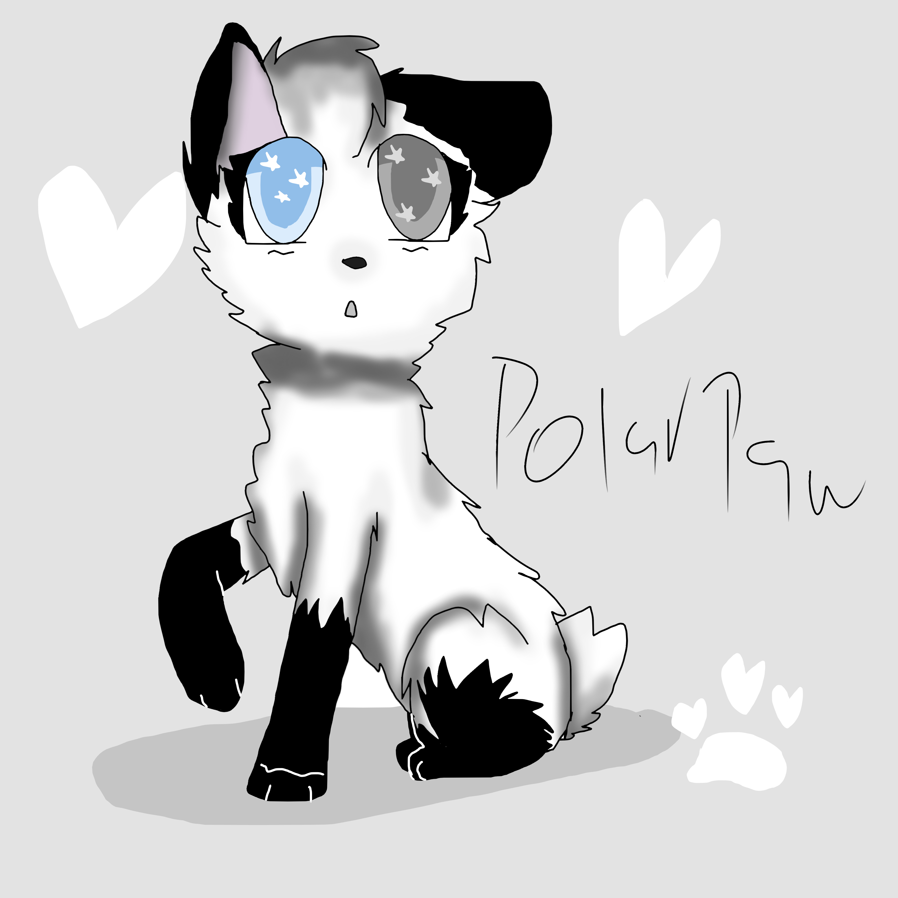

The rabbit-tailed cat stares at you a moment in confusion before smiling sheepishly. She realized you were waiting for her, and then begins her narration, however short, of herself..
Image:

Sorry about the purple spot!
Name:
Polarkit, Polarpaw, Polarstorm
Nickname:
Bunny, Polar, Hoppy
Age:
7 moons
Personality:
Polarpaw is a sweet she-cat. She is like a diary, holding secrets from anyone that will let her help. She has a sort of.. Phsyciatrist personality, but more friendly and sweet. She tries her best when giving advice, but if she doesn't have it, please come back later. Anyways, despite it all, she is honestly a personal diary for anyone. Despite this, she is often used for a messenger type cat, being as she can run fast. Not as fast as a monster, but faster than normal apprentices. Trusts her mother a lot.
Appearance:
Polarpaw is a rabbit tailed cat with short white fur. Her paws are black and stop halfway up, and her ears are black. She has two different colored eyes, one icy blue, the other a stormy grey. She also has a sort of hop when excited, thus nicknaming her 'Bunny'
Clan:
Windclan
Disabilities:
None, except the struggle of keeping everything she is told a secret. Stuff like that often breaks a girl that's loyal, especially when it goes against Starclan
Accent:
Southern. She has a southern background, because her mother(Open if ya wanna play her :3) is southern as well, father is unknown.
Relationships:
None romantically, but her mother and her twin sister(also open) are here!
Other:
Nope